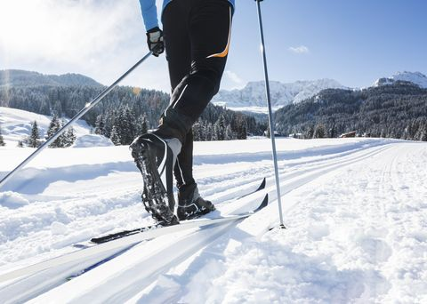
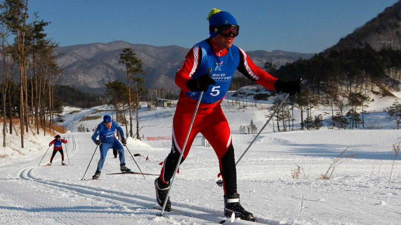

Nordic skiing today is far less common than alpine skiing.
its most popular version is "cross-country" skiing
which entails skiers traveling long distances utilizing their skis.
Cross-country skiing is a popular olympic sport, it also has
World Ski Championships held every odd number year.
 